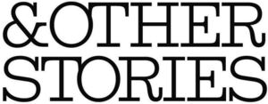

Trade Mark Journal No.2025/046 14 November 2025
WO0000001883729 (3,18,25)
Office of origin: European Union Intellectual Property Office (EUIPO)
Date of International Registration:24 September 2025
Date of designation in the UK:
24 September 2025

International priority date claimed: 4 August 2025
(European Union Intellectual Property Office (EUIPO))
(019227751)
- Class 3
- Non-medicated cosmetics and toiletry preparations; bleaching preparations and other substances for laundry use; cleaning, polishing, scouring and abrasive preparations; soap; perfumes; ethereal oils; cosmetics; hair care preparations; toothpaste; nail polish; lacquer-removing preparations; toiletries; after-shave preparations; facial masks; face creams; facial washes [cosmetic]; anti-aging creams; baby oils; bath gels; bath salts; hair balm; bleaching preparations for the hair; cosmetic cotton balls; cotton sticks for cosmetic purposes; eyebrow pencils; eyeliner; hair dyes; adhesives for affixing artificial fingernails; adhesives for affixing false eyelashes; false eyelashes; false nails; premoistened cosmetic wipes; styling gels for the hair; hair styling waxes; hand creams; hair removal and shaving preparations; skin care preparations; mouth washes, not for medical purposes; non-medicated mouth sprays; make-up; body creams [cosmetics]; body scrub; body butter; bronzing preparations; non-medicated lip balm; lip gloss; lip liners; lipstick; mascara; mousses [toiletries] for use in styling the hair; eyelid shadow; scented body spray; body cleansers; body glitter; body lotion; body mist; body powders; leather and shoe cleaning and polishing preparations; smoothing stones; rouges; sun blocking lipsticks [cosmetics]; sunscreen preparations; make-up foundations; skin moisturizing gel; incense; deodorants for human beings or for animals; air fragrancing preparations; shampoo; hair conditioners; stain removers; essential oils.
- Class 18
- Leather and imitations of leather; luggage; carrying bags; collars, leashes and clothing for animals; travelling bags; wallets; evening handbags; work bags; shoulder bags; canvas bags; shopping bags; hand bags; tote bags; animal carriers; cosmetic purses; leather laces; fanny packs; briefcases; rucksacks; athletics bags; vanity cases, not fitted; credit card holders; purses; trunks (luggage); card cases (notecases); key cases; umbrellas; parasols.
- Class 25
- Clothing; footwear; headgear; bathing suits; swimwear; bath robes; bikinis; belts; clothing for children; babies' pants; ballet suits; coveralls; pantsuits; pants; denims; denim jeans; neckerchiefs; garters; gloves; jackets; shorts; skirts; sportswear; underwear; dresses; cardigans; short-sleeve shirts; hooded jumpers; maternity clothing; nightwear; overalls; pocket squares; polo neck jumpers; pullovers; rainwear; scarves; shawls; shirts; neckties; beachwear; tanktops; hosiery; pantyhose; sashes for wear; tights; stockings; sweaters; t-shirts; masquerade costumes; wedding gowns; waistcoats; tunics; mitts; coats; shoes; boots; booties; sandals; slippers; running shoes; ballet slippers; hats; caps; toques; visors; headbands; shower caps; sleep masks; ready-made clothing; waterproof clothing.
H & M Hennes & Mauritz AB
Representative: WESTERBERG & PARTNERS ADVOKATBYRÅ AB, Regeringsgatan 66, SE-111 39 Stockholm, SWEDEN